High Dynamic Range and Tone Mapping
Overview
Note that in real scenes, radiances are continuous and wide-ranged. With pixels having range of discrete values from 0 to 255, normal digita cameras cannot capture the full range of radiance in a single image. Also, note that the mapping between pixel values and radiance is not linear, which further makes the retrival of the radiance more difficult. The project also includes tone mapping, which maps the radiance map back into an image with high dynamic range. The project ideas are inspired by Debevec and Malik 1997 and Durand 2002, and the HDR image series are from Debevec and Malik 1997.
High Dynamic Range Radiance Map Recovery
By taking images of the same scenes at different exposure time, we can get images of different light intensities but same radiance. With these data and the assumption that the mapping between the log intensity and pixels is smooth, we can get the radiance map by minimizing the following objective.
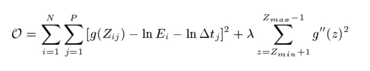Note that the first term is to find the mapping between log intensity and pixel values, and the second term is to ensure the mapping function is smooth. Below are the HDR image series and the radiance map results for three color channels.
|
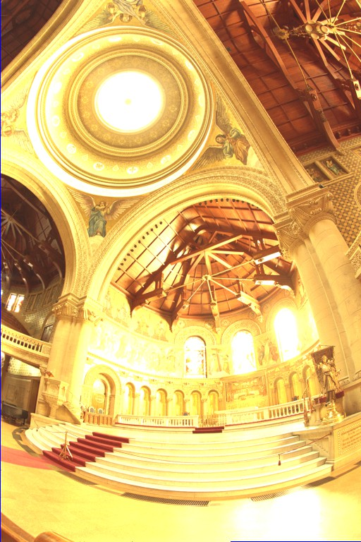
t = 32 |
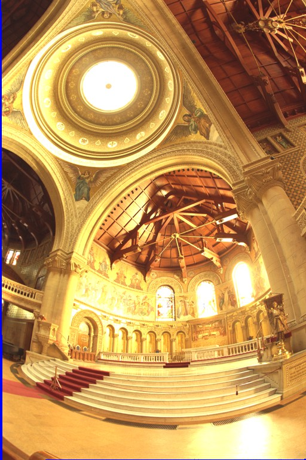
t = 16 |
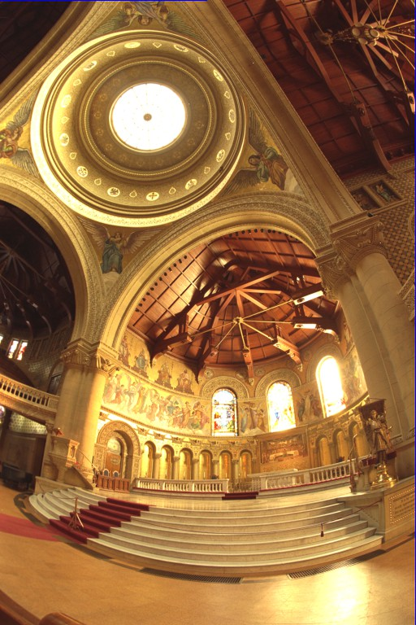
t = 8 |
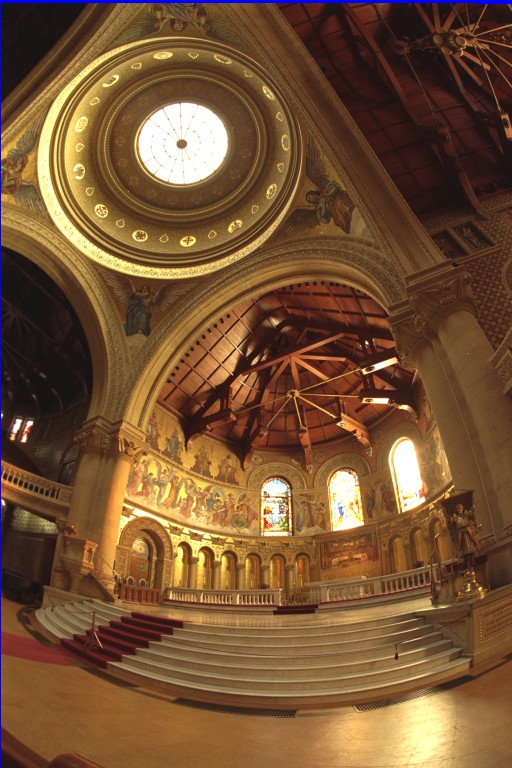
t = 4 |
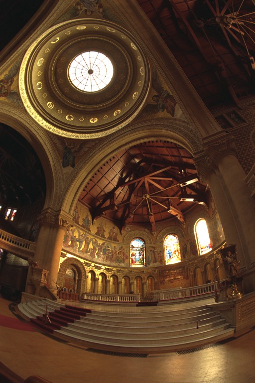
t = 2 |
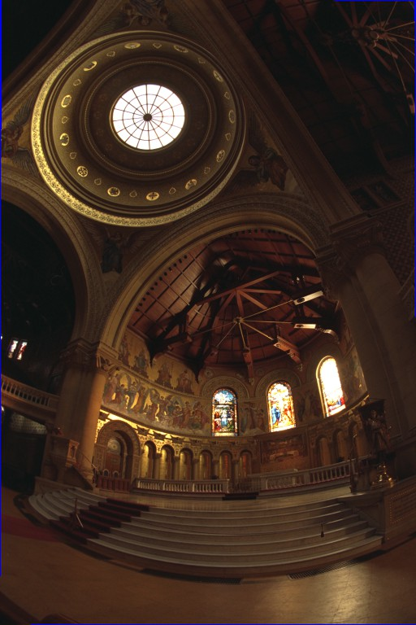
t = 1 |
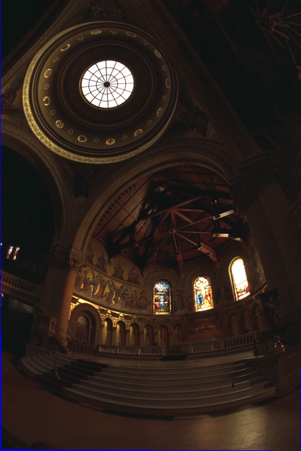
t = 1/2 |
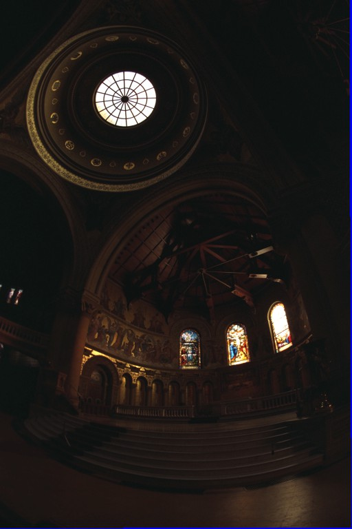
t = 1/4 |
|
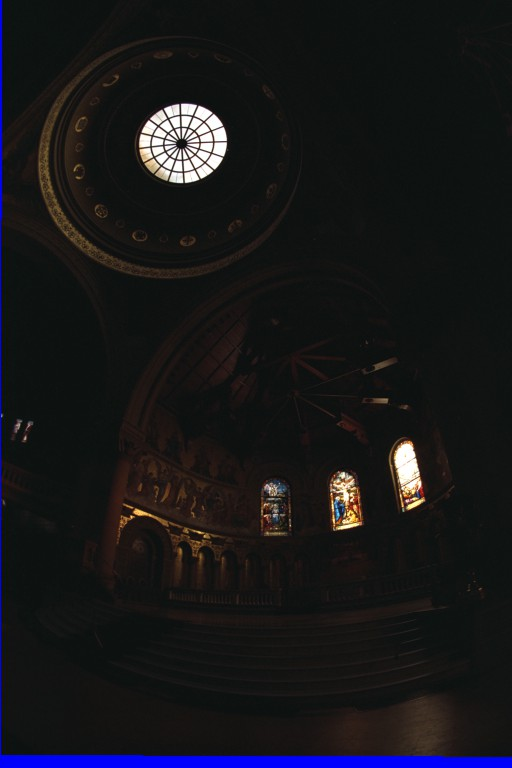
t = 1/8 |
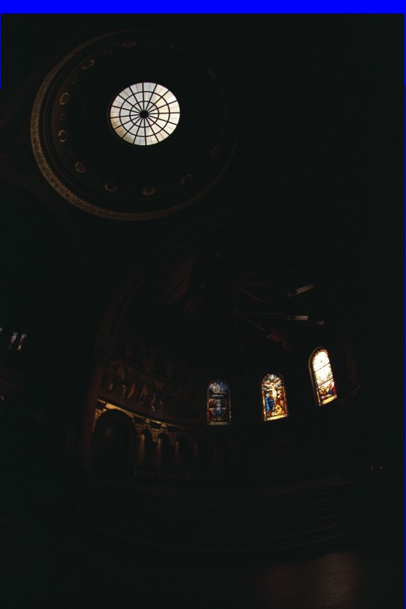
t = 1/16 |
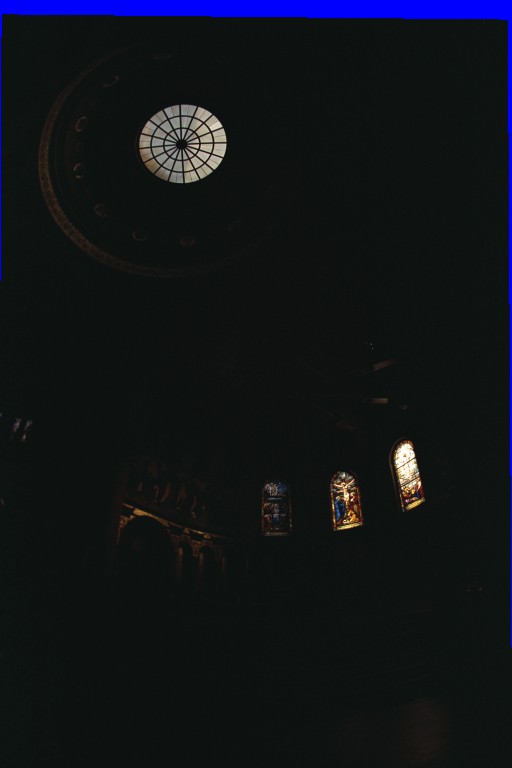
t = 1/32 |
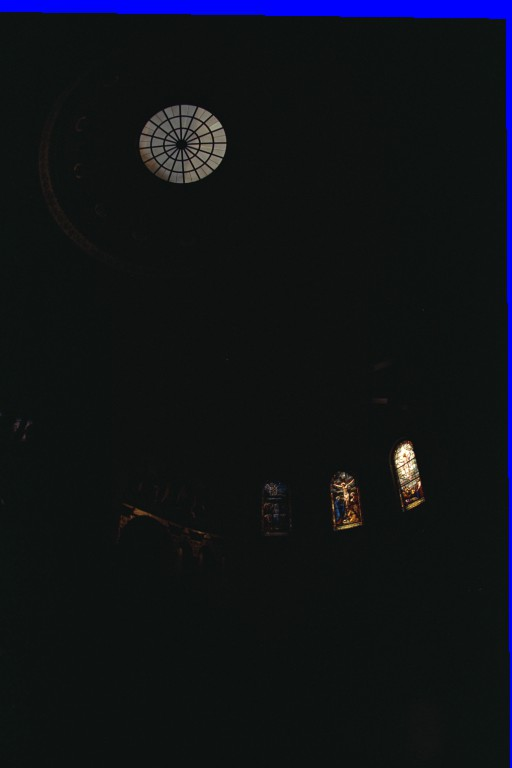
t = 1/64 |
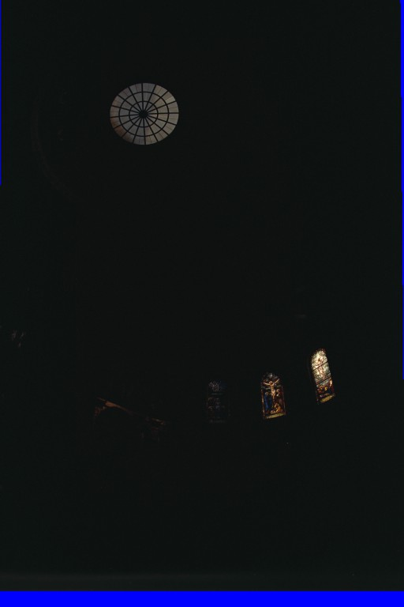
t = 1/128 |
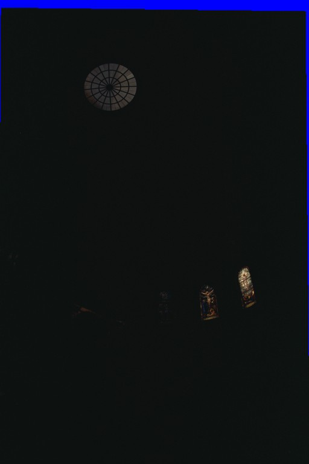
t = 1/256 |
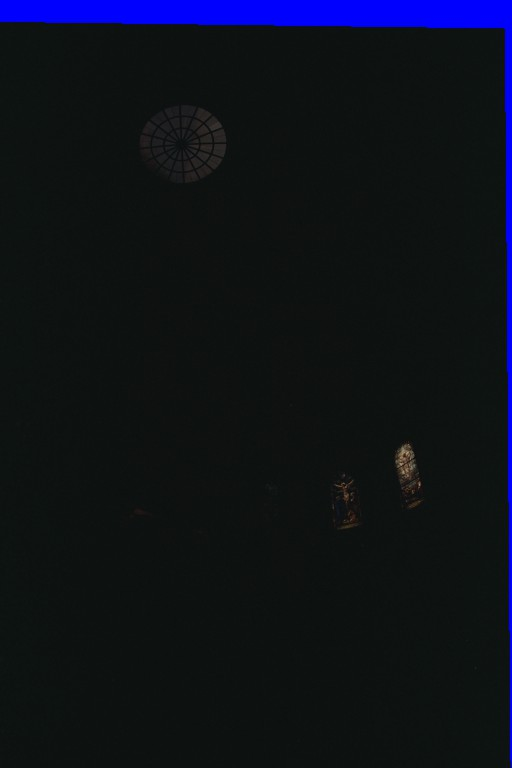
t = 1/512 |
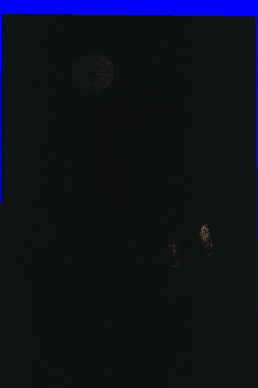
t = 1/1024 |
|
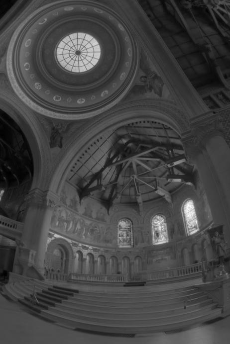
Log radiance result for R channel |
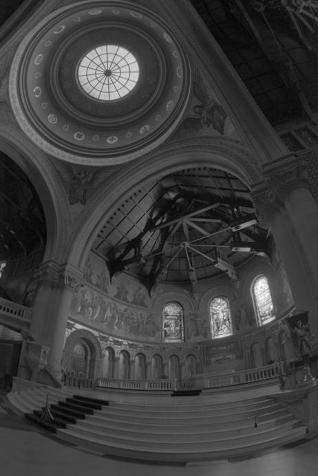
Log radiance result for G channel |
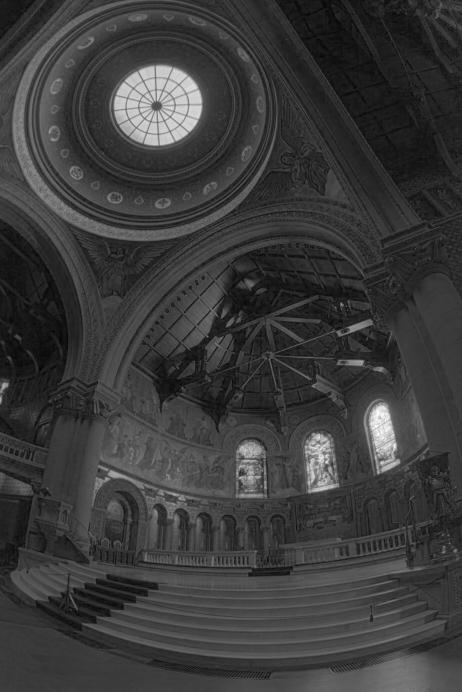
Log radiance result for B channel |
Tone Mapping
To generate an image with high dynamic range given the radiance map, the essential problem is how to map the continuous radiance into range from 0 to 1. Below is a common global tone mapping approach, which maps intensity I to pixel value (floating point) I/(I+1). Since the radiance is always positive, this mapping successfully maps radiance into the pixel space [0, 1]. On the other hand, the local tone mapping technique is reimplementing the simplified version of Durand 2002. The idea is basically using a bilateral filter to generate a different mapping based on the details (edges, corners, etc.) of the image. This creates an effect that preserves the details of the mapped image, which is shown below. One can see that the local tone mapping method generates image with sharper corners and edges (high frequency components).
|
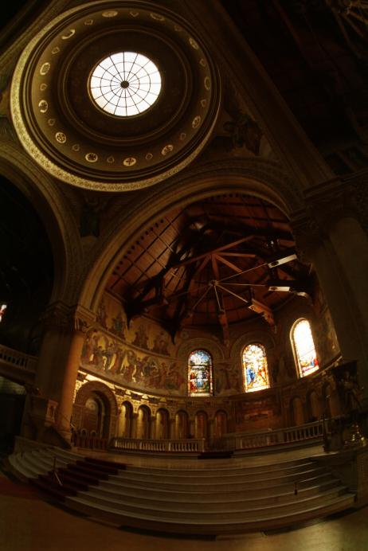
Global tone mapping result |
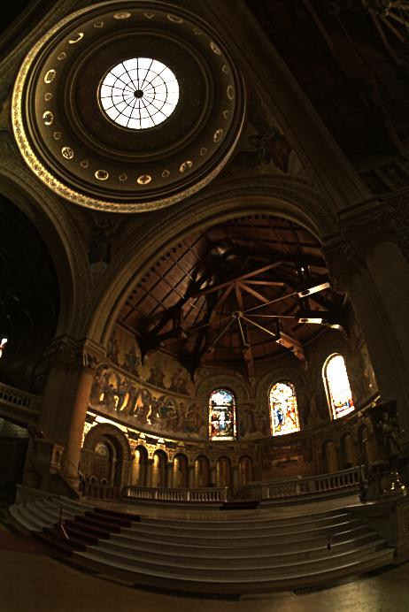
Local tone mapping result |